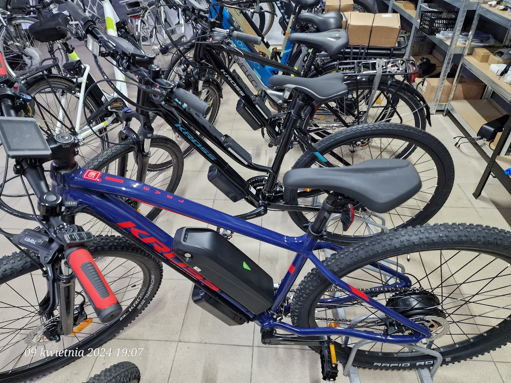
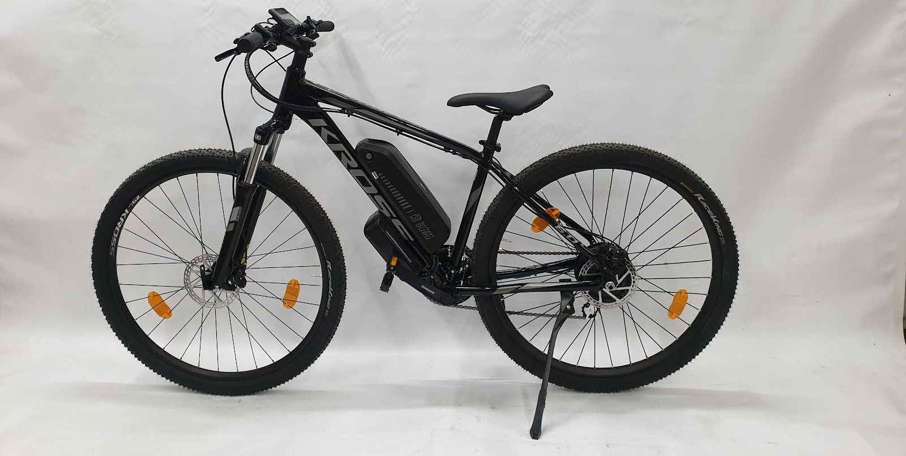
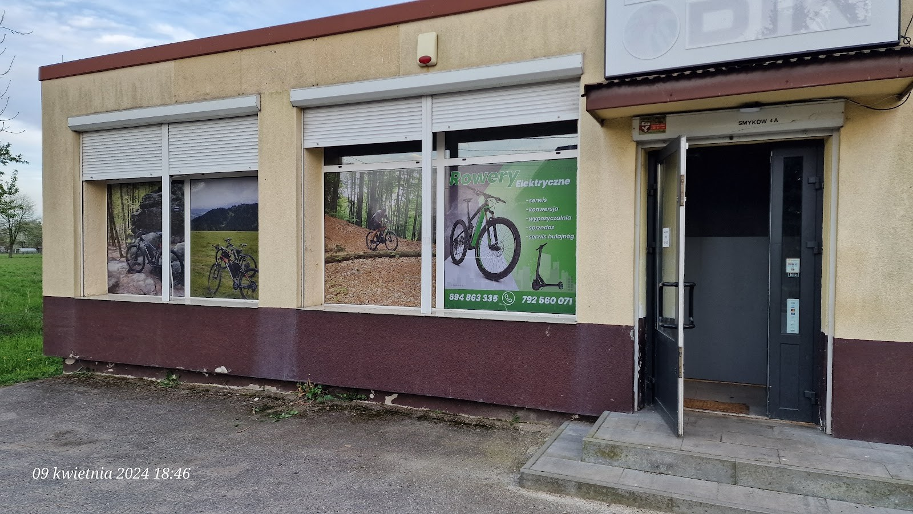
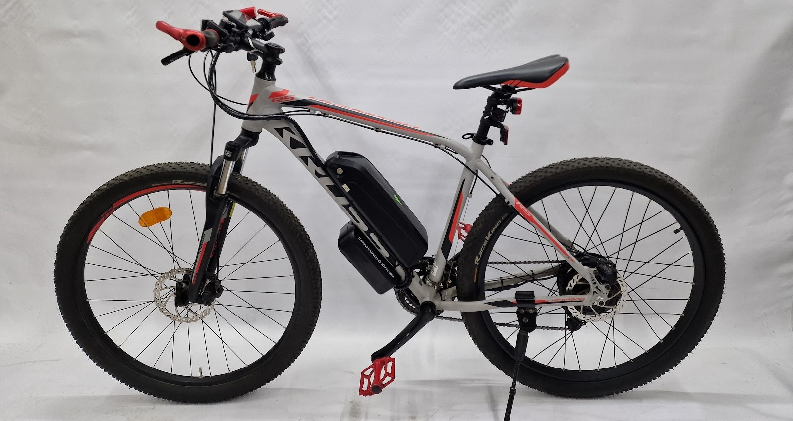
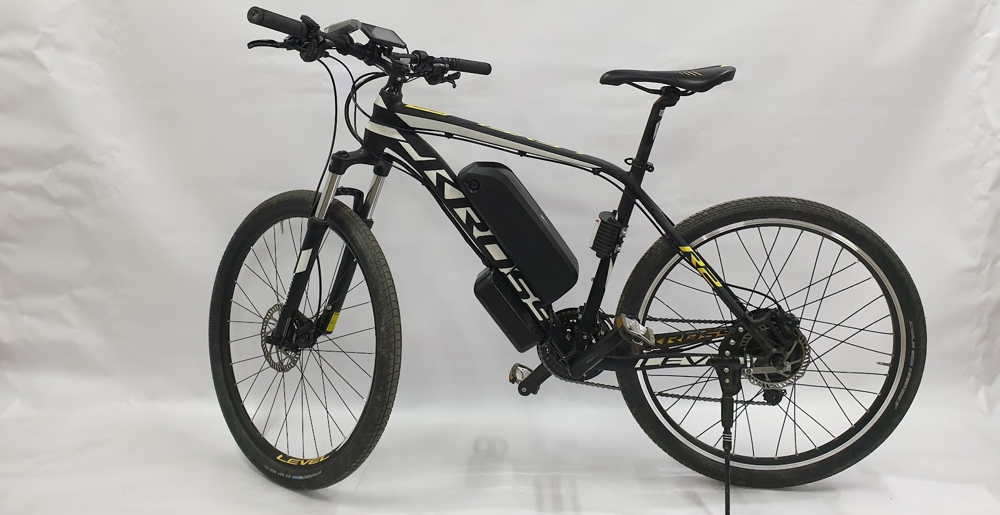

Przeróbka rowerów na elektryczne, sprzedaż e-bike'ów i serwis. Smyków pod Bochnią. Robimy to od lat, bo rowery to nasza codzienność, nie tylko praca - dlatego wycenę poznajesz przed robotą, a sprzęt wraca sprawdzony.

Rowery elektryczne Bochnia to warsztat i sklep w Smykowie pod Bochnią. Przerabiamy zwykłe rowery na elektryczne, sprzedajemy gotowe e-bike'i i serwisujemy jednoślady - od przeglądu po poważniejszą naprawę. O rowerach potrafimy rozmawiać godzinami, bo to nasza pasja.
Zanim cokolwiek ruszymy, mówimy wprost, co jest do zrobienia i ile to kosztuje. Do przeróbki dobieramy silnik i baterię pod wagę roweru oraz Twoje trasy, a stary sprzęt zamiast wymieniać - modernizujemy. Prowadzimy też wypożyczalnię rowerów elektrycznych i serwis hulajnóg.
Poznaj nas →Zajrzyj do środka - gotowe rowery elektryczne, przeróbki na prąd i miejsce, w którym powstają.



Cenią nas za terminową robotę, rozsądne ceny i to, że tłumaczymy wszystko po ludzku. Ocena 5,0 na 24 opinie w Google.
Pozytywnie zakręceni wariaci - o rowerach, ich naprawach i modyfikacjach mogą rozmawiać godzinami. Bardzo lubię takich ludzi, którzy mają pasję i poświęcają się serwisując rowery.
Pan właściciel to niezwykle kompetentny i rzetelny fachowiec. Przeróbka naszych starych rowerów na elektryczne została wykonana terminowo i za niezbyt duże pieniądze. Duża kultura obsługi.
Firma godna polecenia. Obsługa szybka i profesjonalna, chętnie pomogą i doradzą. Sprzęt służy bardzo dobrze - korzystam od roku i nie ma z nim żadnego problemu.
Napisz lub zadzwoń - powiemy, co i jak, bez zobowiązań.